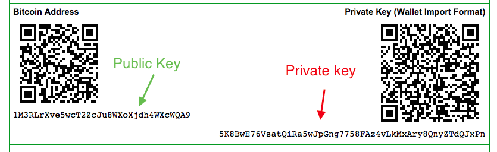

Choosing a Wallet
Now that you understand what Bicoin is and a bit about how it works. You can start using it for yourself.
There is a variety of wallets available, with wallets available for every operating system imaginable. if you are just going to be buying and selling Bitcoins, you'll want a lite wallet like https://multibit.org/. This type of wallet only downloads the essential parts of the Blockchain to allow you to transfer for personal use.
The second kind of wallet is a full size wallet. What this means is that the wallet will download the entire Blockchain from Bitcoin's inception. The issue with this type of wallet is that the file size is now over 80GB, which would take a long time to download for most people, or use up tons of hard drive space. The recommended full wallet is Bitcoin Core. If you want to see all the best options available to you, go here.
